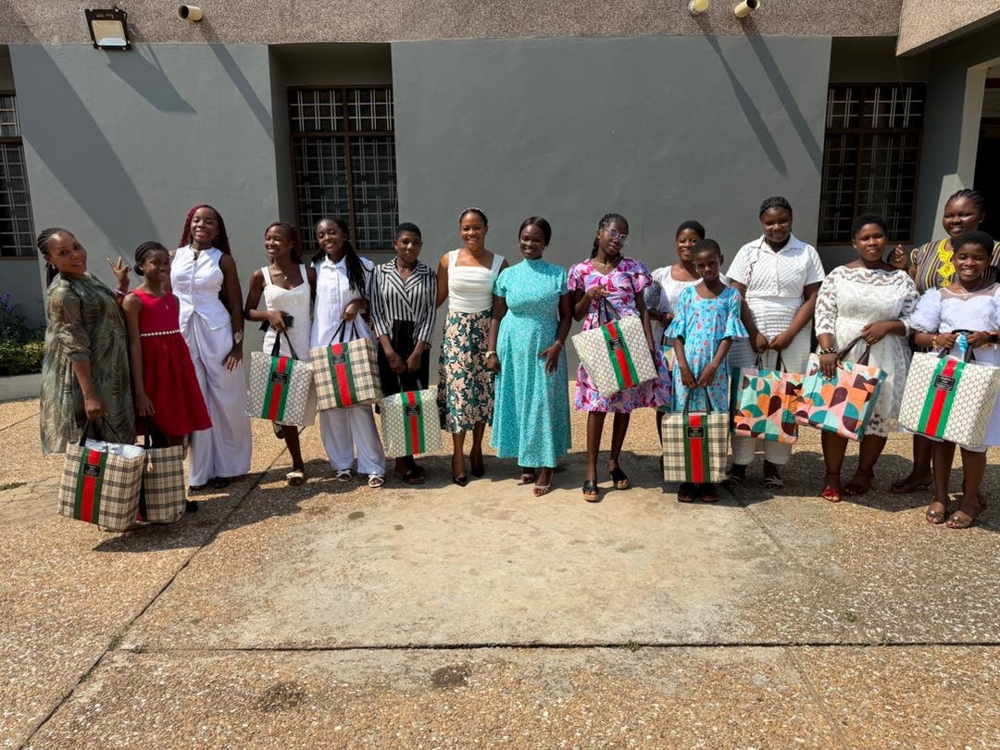
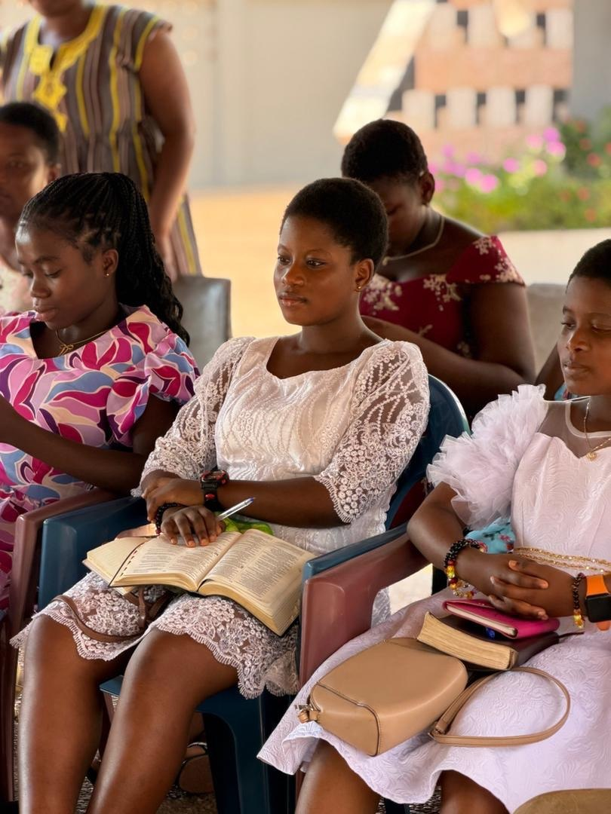
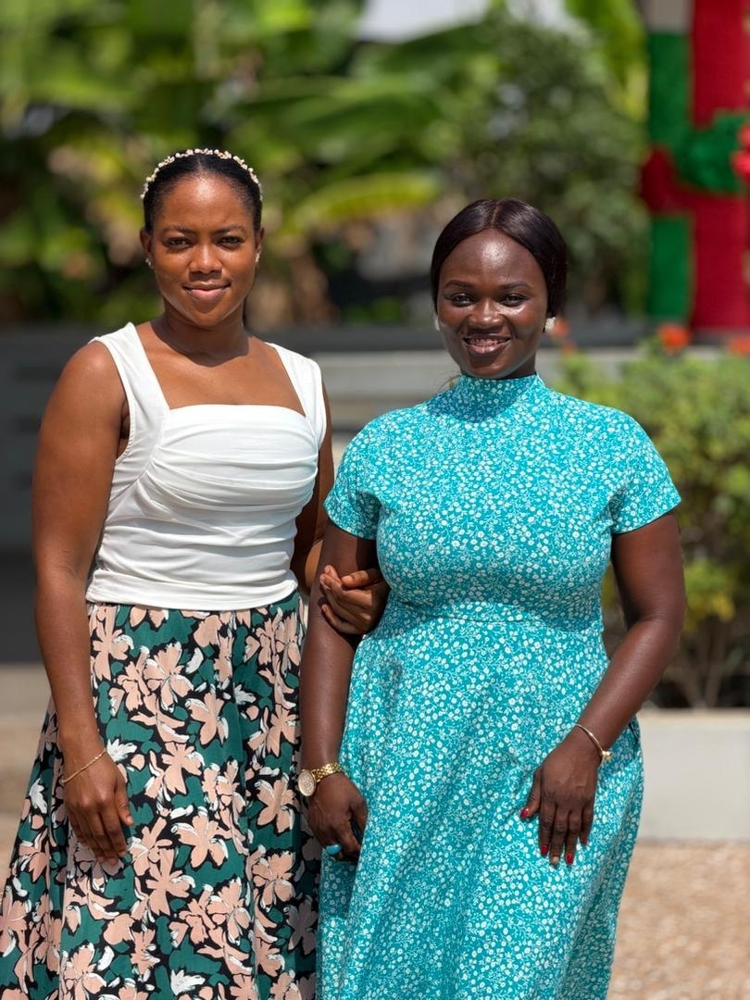

Bloom Girls
Adolescent health education including menstrual health, puberty, and confidence building.
HEALTH • EDUCATION • DIGNITY
A world where every girl and woman has access to health education, preventive care, and the dignity to thrive.
Explore our workWe create safe spaces where girls and women can learn, ask questions, and receive care without shame or fear.
WHO WE ARE
The Bloom & Thrive Foundation is a women-led initiative committed to improving the health and wellbeing of girls and women through education, health talks, screenings, and community outreach.
Bloom exists to ensure that women are not only cared for, but empowered to thrive.
A world where every girl and woman has access to health education, preventive care, and the dignity to thrive.
OUR PROGRAMMES
Adolescent health education including menstrual health, puberty, and confidence building.
Women’s health education including reproductive health, anaemia awareness, breast health, and mental wellbeing.
Community-based health education sessions led by women health professionals.
Basic health screenings such as blood pressure checks, anaemia awareness, and referrals.
Dignity support including sanitary pad distribution, hygiene packs, and health resources.
SEE OUR WORK
A glimpse of Bloom & Thrive Foundation's work creating safe spaces, sharing health education and supporting girls and women in our communities.

Connecting with women and girls through community-based initiatives.

Creating safe spaces for girls to learn, ask questions and build confidence.

Building a community where women can learn, connect and thrive.
Promoting menstrual health, self-care and access to sanitary supplies.
WATCH OUR WORK
Watch a glimpse of our work, community activities and the people we are privileged to serve.
WHAT GUIDES US
Every woman deserves respectful, stigma-free care.
Knowledge empowers lifelong health choices.
Early awareness saves lives.
Care delivered with empathy and understanding.
Women supporting women.
WHO WE SERVE
Health talks on rotating women’s health themes.
Community health screening events.
Adolescent girls’ health and dignity outreach with pad distribution.
JOIN THE MOVEMENT
Get involved through volunteering, partnership, community participation or supporting our work.
Get involvedCONTACT US
Add your official email address, phone number and social media links here before publishing.